the humane conception of human though
what is an interface?
what are some examples of interfaces?
the exact point of where you interact
what are some examples of natural interfaces?
false
hidden
perceptible
obvious
physical interfaces give us a point of access to an external object
are there interfaces for the non-physical?
1.
2.
symbols such as
- letters
- numbers
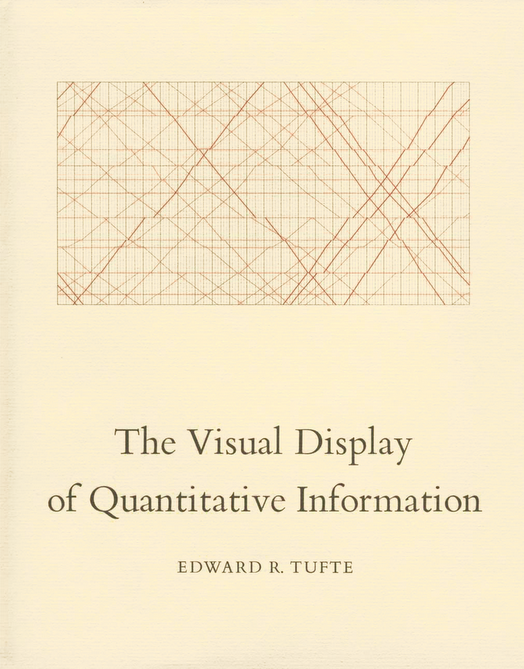
vilem flusser's line vs. plane
using multiple modes in communicating information back to the user
equivalence
specialization
redundancy
complimentarity
transfer
concurrency
the more modalities in the interface
the more effective the message
(but too much of unimodality can have a detrimental effect)

interfaces are designed affordances with a purpose to act and know about something else
the digital
- a black box exclusively made up by people
so what do digital interfaces link to?
computer interfaces
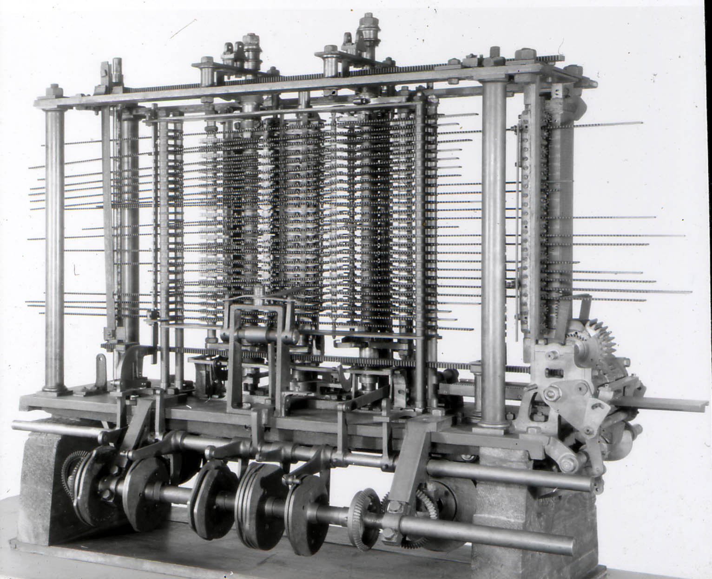
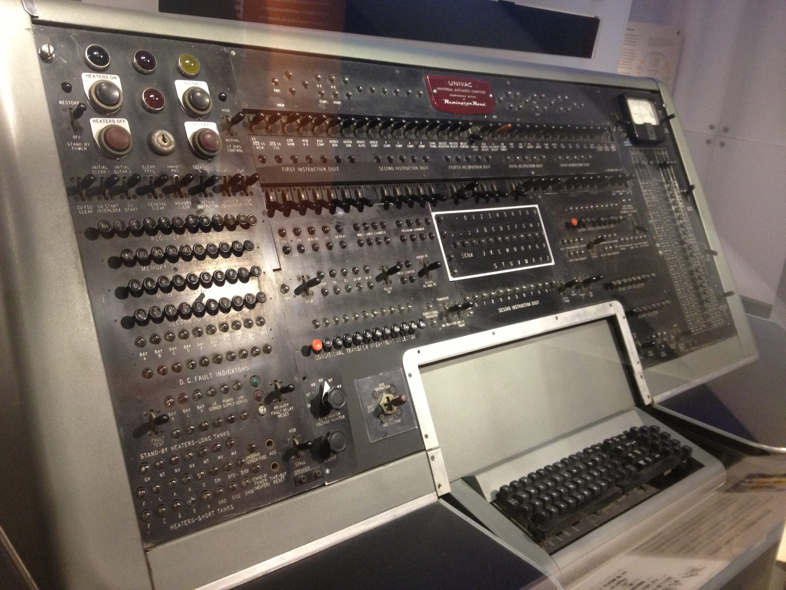
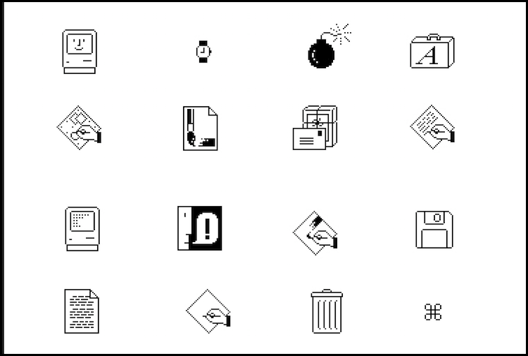
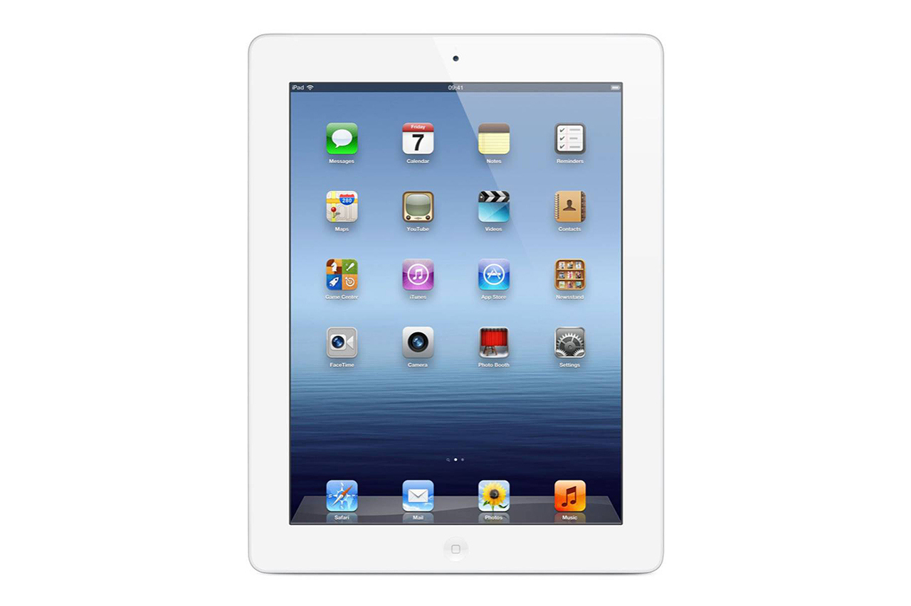
abstracting
everywhere, interfaces inform the action
things are required to make them usable
- input/output
- dialogue
- a function
- an organization
is it useful?
is it obvious?
is it cooperative?
is it consistent?
does it allow for mistakes?
is it modular?
is it informative?
four broad types of digital interfaces
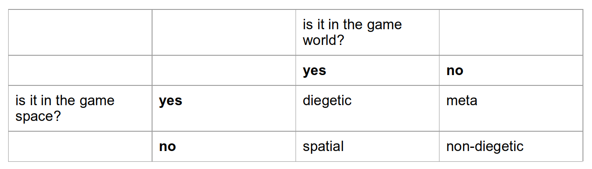
non-diegetic
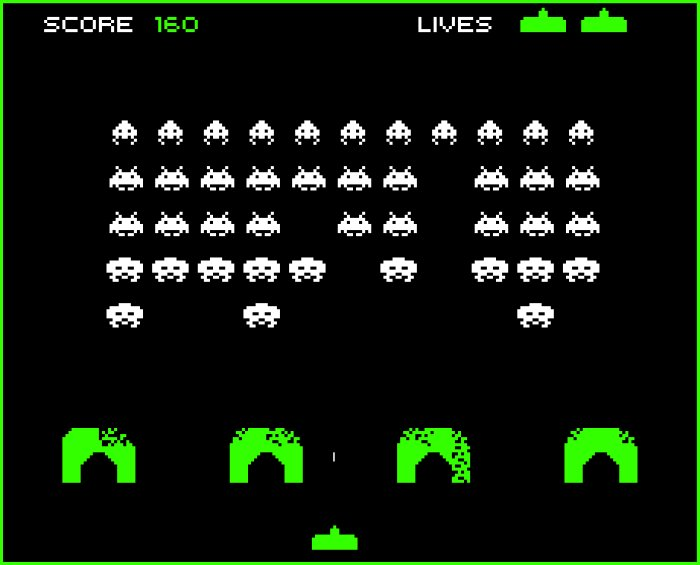
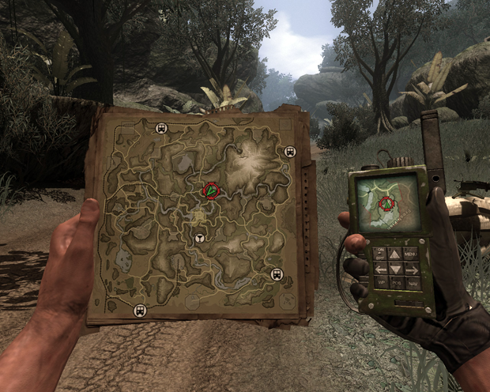
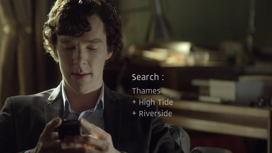
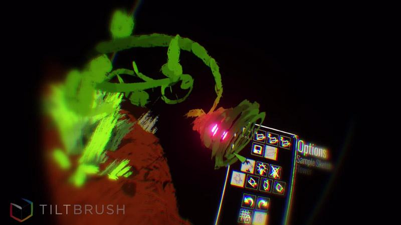
digital interfaces rely on physical interfaces
what are physical interfaces for vr?
spatiality
in movement
in layout


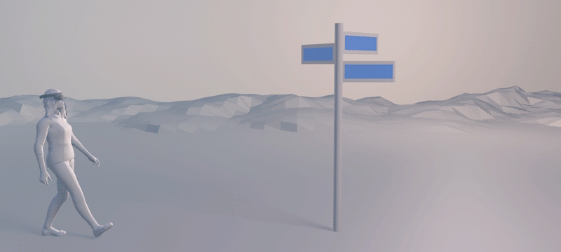
- the interface represents your world.
- the interface is a dialogue between the internal thoughts of the user and the external states of the object, and every dialog can be both rational and emotional.